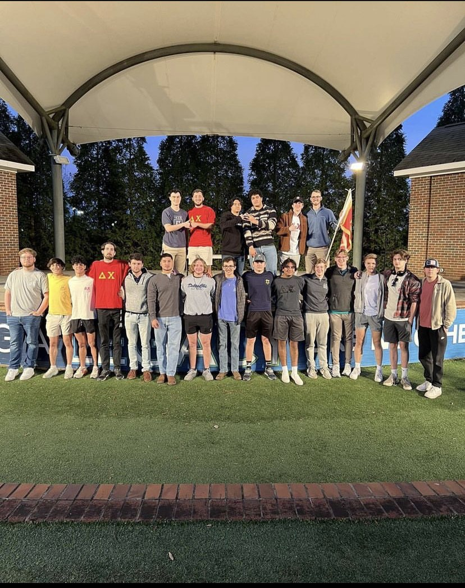

Welcome
Welcome to my personal website and blog! Thank you for stopping by! As someone who is passionate about teaching Cyber Security and Computer Science, I hope my blog can help you succeed in your courses and to help point you in the right direction I've provided a guide detailing what each page provides.
-
The Home Page provides context on who I am as a person and my personal journey in Cyber Security and Computer Science and my extracircular activities.
-
The Experience Pagegoes in depth on my background, past work experience and accomplishments which is a great place to visit for those curious about my professional background
-
TheEducation Page details my academic background and where I stand in my degree path.
-
MyBlog goes in depth on what I'm learning about and provides useful resources for those majoring in Cyber Sciences. I update my blog every day so stay tuned for upcoming posts
-
Lastly, theContact Page is where I've linked the best ways to reach out to me.
My name is Ryan Hawkins and I'm currently a Freshman at Augusta University studying and majoring in Cyber Security with a minor in Computer Science. After graduating from HEGA (Hybrid Education Greater Atlanta) in May of last year and I came to Augusta University in hopes of one day being able to have a career in the field of Cyber Security.

Despite only being a student at Augusta University for a little less than a year, I've been able expand upon my knowledge in both Cyber Security and Computer Science these past 2 semesters I've spent in Augusta. Although, I'm far from graduating I feel like I have a solid grasp over the fundamentals of both fields which allows me to assist my peers and act on the skills I've learned. Although I still have much to learn I'm excited for what the future holds an what the world of Cyber Security and Computer Science has to offer.

Not long after starting my first semester here at Augusta University I would rush and then join the Augusta Delta Chi Chapter. Despite being realitively new to our chapter I've been able to not only make life long friends and connections. Additionally, I've also demonstrated my leadership skills and have put them to good use after becoming apart of our EC or Executive Committee. These positions are voted upon by our Chapter from a list of candidates nominated by the Chapter. I was fortunately nominated and elected to act as our Recruitment/Rush Chair and have been very successful and organized our Spring Rush.